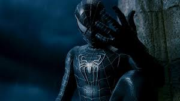

Tobey Maguire's Spider-Man was the first Movie of Spider-Man movies ever in theaters and the first Marvel movie to premiere. Tobey Maguire said "he loved playing Spider-Man, "it was one of the best experiences he had of playing the character". he was upset that the Spider-Man 4 movie was canceled. However Tobey Maguire returned to play Spider-Man in Spider-Man: No Way Home. He also wanted to play Spider-Man in other future MCU movies, because he loved playing Peter Parker. He also gave huge fan base to the films. Its another reason people should watch this Spider-Man movie.
Sources
- insidethemaic
- This website about Tobey Maguire feels about playing Spider-Man again in the future.
- insidethemagic.net
- This link is basicaly the same one as the first one but this one tells how Tobey Maguire wants to return with the original actor.
- cheatsheet
- This website explains why Tobey Maguire movie is basicay the first marvel movie instaed of ironman.